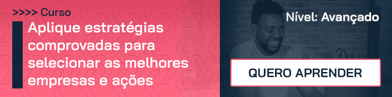

O que são os jogos NFT?
Antes de conhecer as opções de jogos NFT e como ganhar dinheiro com elas, é preciso entender o conceito do próprio NFT.
NFT non-fungible tokens
Non-fungible tokens, essa é a definição da sigla. Em português, ela significa token não-fungível, ou uma espécie de ativo que não pode ser substituído. Pode parecer complexo, mas é simples. Quer um exemplo?
Imagine que você tem uma nota de R$ 100, mas precisa trocá-la para pagar um amigo. No lugar da nota, você recebe 10 notas de R$ 10. A quantia permanece sendo a mesma, mas em um número maior de papéis. Isso é a representação é um ativo fungível, ou seja, que pode ser trocado.
Agora imagine que você é um apreciador de arte e fã das obras de Leonardo Da Vinci. Ao pesquisar pelo quadro de Monalisa, você se depara com diversas imagens para baixar. Todas elas representam a obra, mas nenhuma delas é, de fato, a original. Isso é um ativo não fungível, ou seja, um item que não pode ser trocado por ter seu caráter de exclusividade.
Quando falamos de tokens não-fungíveis estamos nos referindo a itens digitais que não podem ser substituídos, trocados, destruídos ou copiados. Essa proteção está resguarda por uma espécie de certificado digital que o torna único e original. É como o quadro da Monalisa que está no Louvre, mas com uma produção digital.
Como funcionam os jogos NFT?
Agora que você sabe sobre o conceito de NFT, vamos levá-lo ao universo dos jogos. Quando falamos sobre jogos NFT estamos nos referindo àqueles que usam tecnologia e criptografia para proteger os itens não-fungíveis. Esses itens podem ser o jogo por completo ou parte deles, como personagens e acessórios.
Nesse ambiente, o jogador pode ter itens especiais, com habilidades e características superiores aos demais e que geram valor de mercado. Assim, surge uma comunidade disposta a negociar dentro da plataforma.
Quando um jogador registra ou se apropria de um ativo NFT, ele recebe um código (token) que confere a exclusividade ao item. Isso impede que ele seja pirateado.
Já a jogabilidade pode variar a cada produção. A maioria delas atua no modo play-to-earn, ou jogar para ganhar. Nesse formato, o jogador recebe renda (tokens) enquanto joga. Por isso, quanto melhor seus itens ou personagens, maiores as chances de aquisição de itens e, consequentemente, moedas.
Outro modelo utilizado nos jogos NFT é o in-game. Nele, o jogador recebe tokens mediante seu avanço no jogo.
>>> Pensando em investir em criptomoedas? Neste artigo aqui você confere quais as melhores opções de corretoras.
Os jogos NFT são gratuitos?
Não existe resposta certa para essa pergunta. Cada desenvolvedora possui um sistema diferente que pode, ou não, exigir o pagamento pelo jogo.
Em alguns casos, por exemplo, o acesso é gratuito e o jogador ganha um personagem para começar a conquistar itens. Em outros jogos, entretanto, o ingresso está atrelado à compra de acessórios ou personagens.
Quais são os melhores jogos NFT?
Também não existe uma resposta certa sobre o melhor jogo NFT. Isso varia conforme as preferências e interesses de cada jogador.
Mas se você quer conhecer algumas opções, listamos abaixo seis jogos que fizeram sucesso ao longo de 2021 e que podem ser boas opções para quem quer ter uma fonte de renda, no mínimo, divertida.
>>> Cada vez mais a palavra criptomoedas tem dominado as discussões entre os investidores. Mas será que ela é uma boa opção? No vídeo abaixo a Clara Sodré fala sobre essa modalidade e como ela funciona. É só dar o play.
1. Axie Infinity
O Axie Infinity é o jogo NFT mais famoso da atualidade. Ele saltou de 35 mil para mais de 2 milhões de usuários, representando uma alta de 5 mil por cento em um período de apenas seis meses.
O jogo é composto por bichinhos fofos e coloridos e envolve metas, batalhas e missões que geram recompensas. Para começar a jogar, é preciso investir na compra de três Axies, que são os bichinhos únicos protegidos por um token chamado Small Love Potion, ou SLP.
2. Bomb Crypto
Se você conhece ou já jogou Bomberman está familiarizado com a jogabilidade do Bomb Crypto. Nele, os jogadores estão inseridos em um labirinto e devem se deslocar e quebrar blocos de pedra para obter recompensas. Quanto mais personagens “minerando”, mais chances de obter boas recompensas.
Para começar a jogar é preciso adquirir um personagem. Nesse jogo, a moeda é a BCOIN – BombCrypto Token. Ela pode ser usada como moeda de troca no próprio jogo ou transformada em dinheiro.
>>> Quer saber mais sobre esse jogo, clique aqui confira o artigo que preparamos para você!
3. Light Nite
O Light Nite é um jogo no estilo battle royale. Isso significa que o jogador é colocado em um ambiente de sobrevivência e no qual deve ser o último a permanecer vivo.
O jogo está disponível na plataforma Steam e para jogá-lo é preciso comprá-lo. A diferença entre o Light Nite e um jogo de battle royale convencional, como o Fortnite, é que todos os elementos, como visuais, itens e armas, são comercializados em uma plataforma paralela, a Lightining Network.
Nela é possível vender ou transferir elementos entre jogadores e as transações são feitas em moedas reais. São as transações dos títulos NFT que permitem que os jogadores ganhem valores com o jogo.
4. CryptoCars
Outro jogo que se tornou febre na atualidade foi o CryptoCars . Ele é uma espécie de Velozes e Furiosos em que os jogadores devem construir e turbinar seus veículos para participar de corridas contra outros jogadores ou a própria máquina. Por serem únicos, os carros são os NFTs desse jogo e podem ser comercializados na loja virtual, assim como as peças dos automóveis.
Para iniciar uma partida no CryptoCards é necessário ter um carro, o que pode representar um grande investimento. Entretanto, embora esse seja um ponto de atenção, o jogo traz grandes possibilidades de ganho aos jogadores. A cada partida vencida, os motoristas ganham Tokens CCAR, uma espécie de criptomoeda.
5. Crypto Planes
Se você gostou da mecânica do CryptoCars tem grandes chances de gostar do Crypto Planes também. A diferença básica entre os dois jogos é que no lugar dos carros, esse jogo utiliza aviões como NFT.
No Crypto Planes o objetivo é participar de lutas em busca de pontos de experiência e tokens do jogo. Nele, a moeda de troca é a CPAN e o acúmulo de pontos permite que o nível do avião seja melhorado.
Para ganhar dinheiro nesse jogo, é possível vender tokens (no caso os aviões) ou ser remunerado com as moedas CPANs.
6. The Crypto You
Bebês que vivem no Planeta Baby e defendem seu maior recurso: as criptomoedas. Esse é o contexto principal do The Crypto You. No jogo, os bebês devem proteger as moedas combatendo os invasores.
Para aumentar as chances de sucesso e, claro, de lucro, os jogadores devem acumular bebês. Quanto mais, maiores as chances de defender o recurso e realizar missões diárias.
Como ganhar dinheiro com os jogos NFT?
Como dissemos, existem dois modelos de jogabilidade nos jogos NFT. No modelo play-to-earn, o jogador deve, literalmente, jogar para ganhar. É o caso do Bomb Crypto, em que o personagem quebra blocos de pedra para obter recursos. Quanto mais personagens envolvidos nessa atividade, maiores as chances de levantar renda.
Já o modelo in-game consiste em jogos em que o jogador acumula tokens ao longo das partidas. Nele também é possível fazer transações com os itens coletados e ganhar dinheiro com elas. Um exemplo de jogo com NFT in-game é o CryptoCars, em que é possível comercializar os carros produzidos e lucrar com a venda.
Conclusão
Embora todos os jogos pareçam divertidos e ofereçam boas possibilidades de ganhos, é preciso se lembrar de que estamos falando de uma espécie de renda váriavel. Como tal, ela sofre os impactos do mercado e a flutuação de preços, que podem impactar diretamente nos ganhos.
Quando falamos de jogos NFT, a raridade de um item é determinante para sua rentabilidade. Se você está em busca de um, precisará desembolsar grandes valores. Entretanto, se é quem está comercializando, poderá receber uma grande quantia. Mas não se esqueça que a oferta e demanda são as norteadoras dessas transações.
>>> E se você está inserido no contexto da renda variável e quer alavancar a gestão de suas ações, que tal se inscrever no curso de Valuation da Xpeed? Nele você aprende a avaliar empresas e papéis com especialistas.
Clique no banner abaixo para ver os tópicos abordados e se inscrever!
